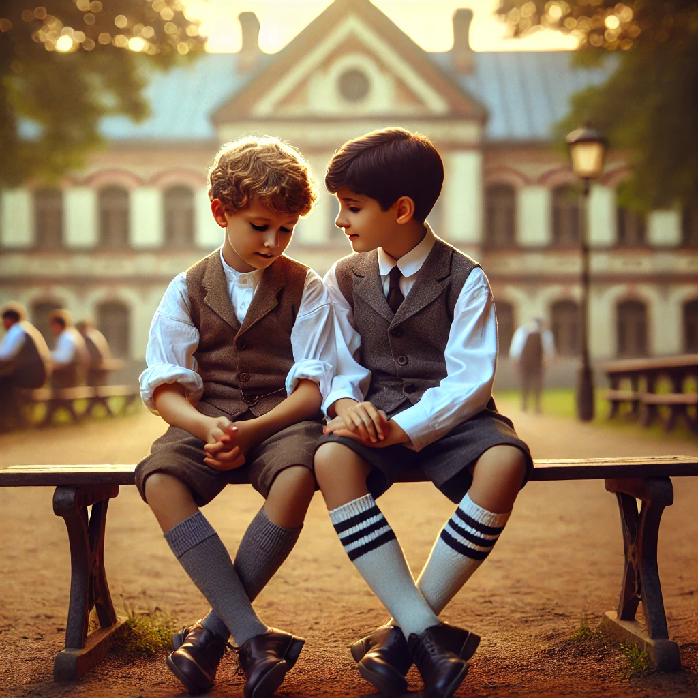

작가
프레드 울만
출판일
1971년
감상평에 대한 AI그림
프레드 울만의 소설 동급생은 나치 치하의 독일을 배경으로 한 유대인 소년과 독일 귀족 소년의 우정에 관한 이야기이다. 책의 전개는 음울한 시대적 배경과는 사뭇 다르다. 두 소년은 꽤나 평화로운 일상 속에서 진정한 우정을 쌓는다. 나는 이 책을 읽으며 실제 그 시대를 살았던 사람들의 입장을 간접적으로나마 접해볼 수 있어 좋았다. 책의 결말부에는 책을 덮고도 한동안 여운이 남을 정도로 강렬한 반전이 있는데, 나는 이것이 사람이 다른 사람과의 연결, 관계로부터 얼마나 큰 영향을 받는지를 보여준다고 생각한다.

감상평에 대한 AI평가
감상평을 보면 책을 읽으며 깊은 감정을 느끼신 것이 전해집니다. 평화로운 우정과 음울한 시대적 배경의 대비를 짚어낸 점이 인상적이며, 결말에서 받은 충격과 여운을 강조한 부분이 특히 강렬합니다
✨ 공감과 몰입 – 소년들의 우정과 그 시대를 간접적으로 경험하며 긍정적인 감정을 느끼셨습니다.
✨ 감탄과 여운 – 강렬한 반전을 통해 인간관계의 중요성을 다시금 생각하게 되셨습니다.